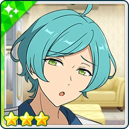
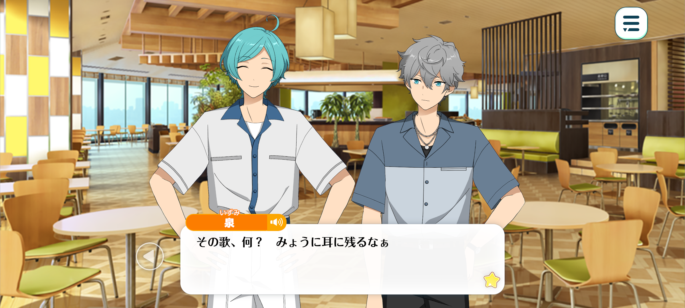
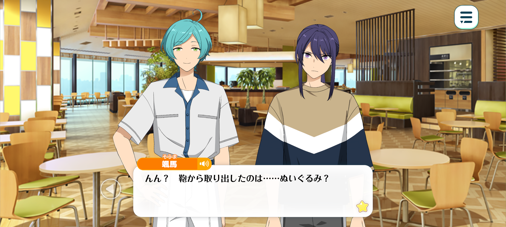
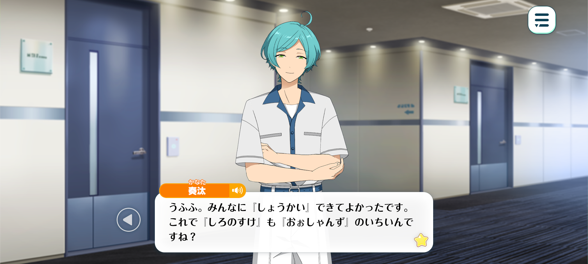
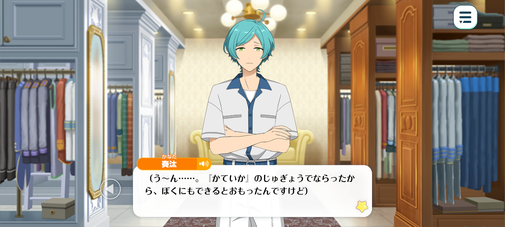

Take A Walk With Me



Season: Summer

Kanata: sea bass, flathead, eel~♪ sillago, sweetfish, swordfish, and tuna~♪
Izumi: What song is that? You're practically singing right into my ear.
Sorry, but I still don't see how this counts as an OCEANS activity.
Shinobu: It's because the Summer Fish Fair has just started in the staff cafeteria!
Izumi: I know that. But the whole point of this circle is to interact with sea creatures, isn't it? This has absolutely nothing to do with that.
Kaoru: Well, there's nothing wrong with doing something like this every once in a while, is there? It's educational, too. We get to learn about seasonal fish and try them while they're fresh.
Or something like that. My real point is that food tastes better when you share it with others. We can compare our thoughts on each dish, too.
Izumi: Did Kao-kun really just say that? I was expecting something more along the lines of, "Ugh, men flirting."
Kaoru: There's no need to be so harsh... Souma-kun, over here!
Souma: My apologies for keeping you waiting. I became rather engrossed in deciding what to eat.
Kaoru: Fair enough. There's quite a lot to choose from, after all. Now that everyone's here, shall we find a table?
Izumi: Let's get a sofa seat... Ugh, they're all taken. There are some spare chairs, though. Should I go get a few?
Shinobu: Wehe. I had a feeling you would say that, so I've already taken the liberty of bringing some over...♪
Izumi: Well, look at you. You’ve got a good head on your shoulders.
Oh, Shinkai brought a chair, too? We've got too many now, so put one back.

Kanata: no. "six" chairs is just right. after all, we have a "guest" today.
Souma: Oh? You've taken a... stuffed animal out of your bag?
Kanata: say hello to mr white croc ♪
Shinobu: A white crocodile? To my eyes, it looks more like a shark...?
Kanata: mr white croc is a "shark". he's part of the "mouse shark" family.
Shinobu: A crocodile, a shark, and a mouse…? Waa, how confusing~
Kanata: a long time ago, the word for "shark" was also used to mean "crocodile". it's an "archaic" term.
chiaki gave mr white croc to me.
we were at the "arcade" when i happened to spot him. i liked him straight away, so chiaki got him for me.
Kaoru: So you've grown rather attached to him and started taking him everywhere with you? A lovely present from Moricchi, then, hm?
Izumi: If he's that important to you, you should give him a proper name. Though, Naru-kun named her cat "Nyanko", so... That's basically the same as calling a person "Human", isn't it?
Kanata: a proper "name"... hmm... what should it be...?
Shinobu: White croc... White... Ah! How about Shironosuke?[1]
Souma: A fine name indeed! It is a fitting name for a young Japanese gentleman.
Kanata: that's good. let's go with that. i'm glad he has such a wonderful "name".
alrighty. from now on, you'll be coming along with me to lots of different places, "shironosuke"...♪
Izumi: That's not exactly much of a departure from "Mr White Croc"... What do you think, Kao-kun?
Kaoru: Ahaha. As long as Kanata-kun likes it, that's all that matters, isn't it?
Time: An hour later

Kanata: ufufu. i'm glad you got to meet everyone. that means shironosuke is a member of OCEANS now, too, hm?
the "weather" is nice today, so let's go play in the water in the "hanging" garden.
"stuffed" toys can't "puka puka" around in the water. so instead, i'll give you a little tour of the area.
hm? your "pectoral" fin is sticking out... you're growing up so fast, aren't you, “shironosuke”?
(...oh. one of your "stitches" has come undone, and your "stuffing" is coming out.)
(this is bad. i have to fix you, shironosuke...)
Location: ES Dressing Room

Kanata: (nooo... i learned how to sew in "home economics", so i thought i could fix you myself. but i've only made things worse.)
(fixing "stuffed" toys is difficult. the hole is getting bigger, and your "stuffing" just won't stop coming out.)
Shu: ...Oya? Kanata. What an unusual place for you to be.
Kanata: shuuu~...
Shu: What's the matter? And... is that stuffing from a plushie?
Kanata: yesss. when i tried to fix the "hole", this happened.
if i don't do something, shironosuke will become completely flat... shu, can you fix him?
Shu: Of course. Attempting something you're unfamiliar with will only make matters worse. Just as with Orcatarou, you should have come to me from the start.[2]
Wait here. It won't take long to stitch him back together.
Kanata: okay. you remember orcatarou, shu?
Shu: Well, naturally... It was quite unusual for you to visit the Handicrafts Clubroom, after all.
Shironosuke, was it? And why exactly is he so dirty?
Kanata: i've been carrying him around with me. since he's white, you can see every bit of "dirt".
but it's okay. i put him in the washing machine and dryer every night to make him pretty.
Shu: Non! Don't put him in the washing machine, Kanata! The very basics of plushie care dictate that they must be washed by hand.
Plushies aren't particularly durable, you know. You shouldn't be carrying him around everywhere with you.
Kanata: booo. sorry, shironosuke... i know i "promised" to take you sightseeing.
i'm really sorry, shironosuke. from now on, you'll have to stay in my room.
Shu: That's precisely where he belongs. I thought you considered him family? Then you ought to treat him with the proper care and respect.
There. All finished. Consider this a present from me. While Shironosuke is resting at home, he can sit on this cushion.
Kanata: uwaa, thank you very much...♪ shu's “hands” have made you all better~. i'm so glad you're okay, “shironosuke” ♪
it's sad that we can't go on "adventures" together anymore. but i'll make sure to come home with lots of "stories" to tell you.
be a good boy, “shironosuke”...♪
- shiro means white. nosuke is just a common ending for japanese boy names
- reference to shu’s 6th management story where kanata asks shu to repair a plushie called orcatarou